Latest values per Tier A family. Generated Wed Sep 02 2026 14:32 ET.
Each figure is tagged with its basis — y/y (year-over-year) · m/m (month-over-month) ·
m/m ann. (annualized monthly) · q/q ann. (annualized quarterly) ·
m/m chg (level change, e.g. payrolls in thousands) · level (the raw level).
Consumer Spending — Personal Consumption Expenditures (PCE) / Personal Income & Outlays
July 2026
Real consumer spending — Real Personal Consumption Expenditures (real PCE)+2.14%y/y+0.01% m/m
Nominal consumer spending — Personal Consumption Expenditures (nominal PCE)+5.92%y/y+0.16% m/m
Headline PCE price index — Personal Consumption Expenditures inflation (PCEPI)+1.89%m/m ann.+3.70% y/y · +0.16% m/m
Core PCE price index — ex food & energy (PCEPILFE)+2.99%m/m ann.+3.34% y/y · +0.25% m/m
ℹ️ Real Personal Consumption Expenditures (PCEC96): inflation- adjusted consumer spending -- the volume of what households actually bought, the biggest block of GDP.
ℹ️ Personal Consumption Expenditures (PCE): consumer spending in current dollars -- nominal outlays, before stripping out inflation.
ℹ️ PCE Price Index (PCEPI): the Fed's preferred headline inflation gauge -- broader than CPI and re-weights as spending patterns shift.
ℹ️ Core PCE Price Index (PCEPILFE): PCE inflation excluding food and energy -- the specific number the Fed's 2% inflation target refers to.
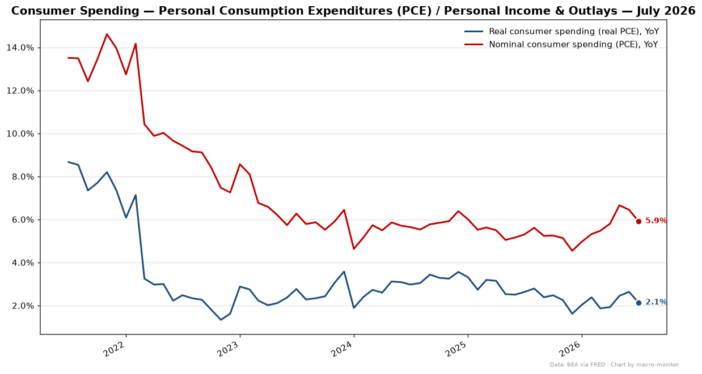
Retail Sales
July 2026
Headline (Retail trade + food services)-0.58%m/m+5.01% y/y
ℹ️ Retail Sales (RSAFS): total monthly receipts at retail stores, online sellers, and food services -- the consumer-spending pulse, in nominal dollars (not inflation-adjusted).
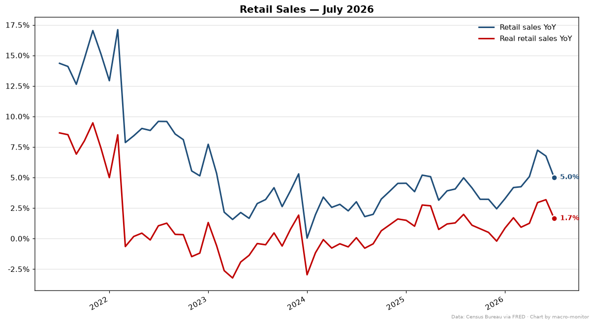
Consumer Credit
June 2026
Total consumer credit+2.43%y/y+0.28% m/m
ℹ️ Total Consumer Credit (TOTALSL): outstanding consumer borrowing excluding mortgages (credit cards, auto loans, student loans) -- whether households are leveraging up or paying down.
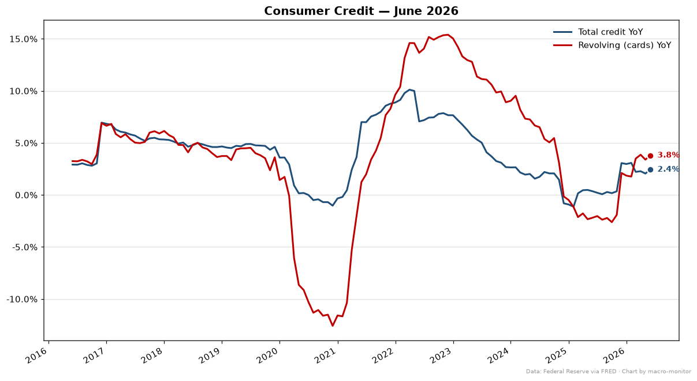
Existing Home Sales
July 2026
Existing home sales (annualized rate)+0.74%y/y-1.69% m/m
ℹ️ Existing Home Sales (EXHOSLUSM495S): closed sales of previously- owned homes, annualized -- the bulk of housing turnover; rate- and inventory-sensitive.

Loan Delinquency Rates
Q2 2026
Credit card delinquency rate2.85%level-0.2pp y/y
ℹ️ Credit Card Delinquency Rate (DRCCLACBS): share of bank credit- card balances 30+ days past due -- a direct consumer financial- stress gauge, quarterly.
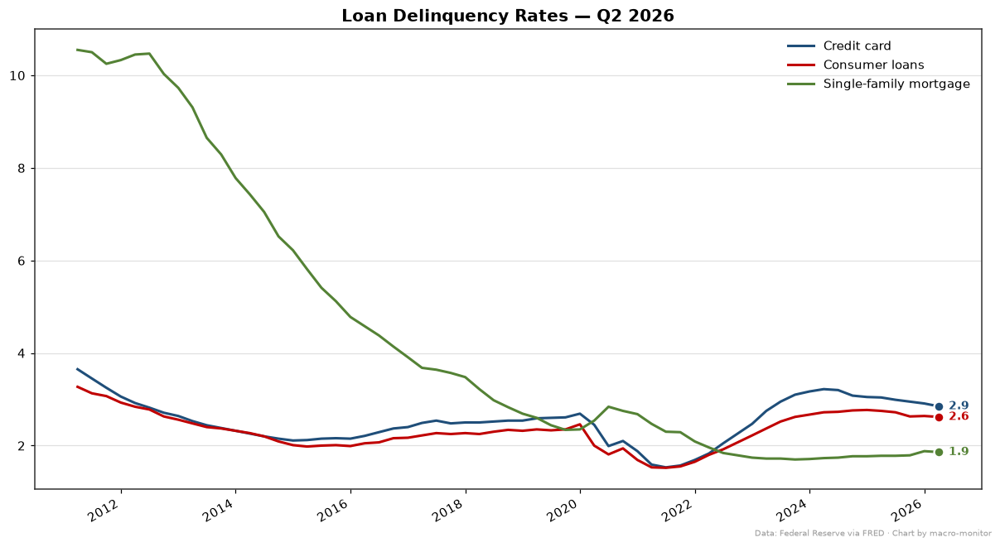
Mortgage Rates (30yr & 15yr fixed)
Week ending Aug 27, 2026
30-year fixed mortgage rate6.66%level+1.52% y/y · +0.00% 4wk
15-year fixed mortgage rate5.98%level+5.10% y/y · -0.99% 4wk
ℹ️ 30-Year Fixed Mortgage Rate (MORTGAGE30US): the average rate on the standard US home loan -- the affordability lever for the whole housing market.
ℹ️ 15-Year Fixed Mortgage Rate (MORTGAGE15US): average rate on the shorter standard loan -- mostly a refinance-demand read.
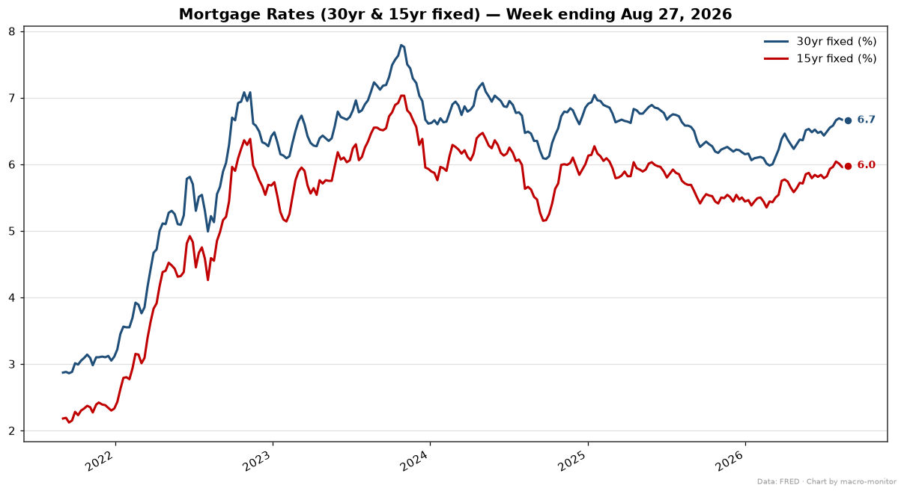
New Home Sales
July 2026
New single-family home sales (annualized rate)-6.33%y/y-10.47% m/m
ℹ️ New Home Sales (HSN1F): signed contracts on newly built single- family homes, annualized -- the homebuilder demand read; leads existing-home sales because it's contract-based.
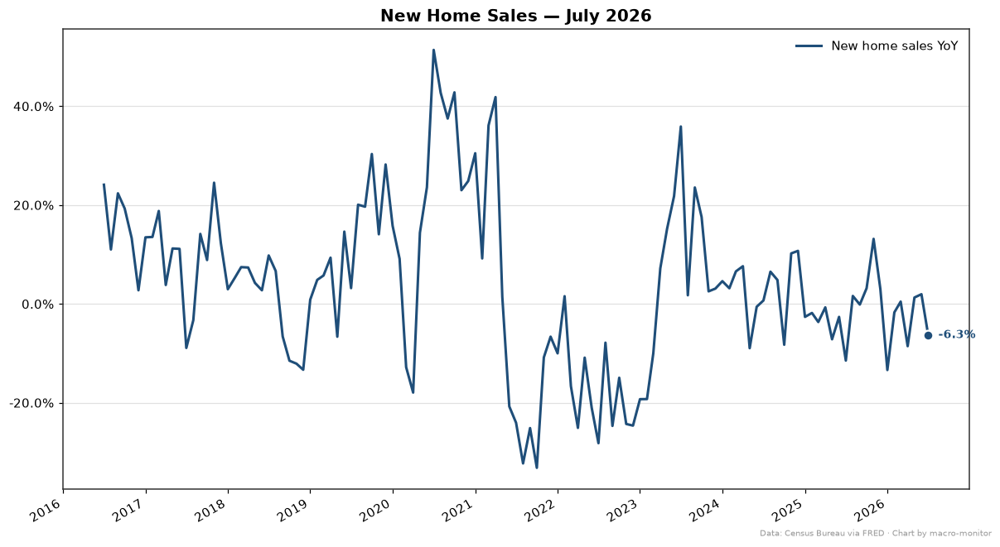
UMich Consumer Sentiment
July 2026
Consumer Sentiment Index55.20level-10.53% y/y · +5.7 m/m chg
ℹ️ University of Michigan Consumer Sentiment (UMCSENT): monthly survey of how households feel about their finances and the economy -- soft data, but a leading read on spending willingness.
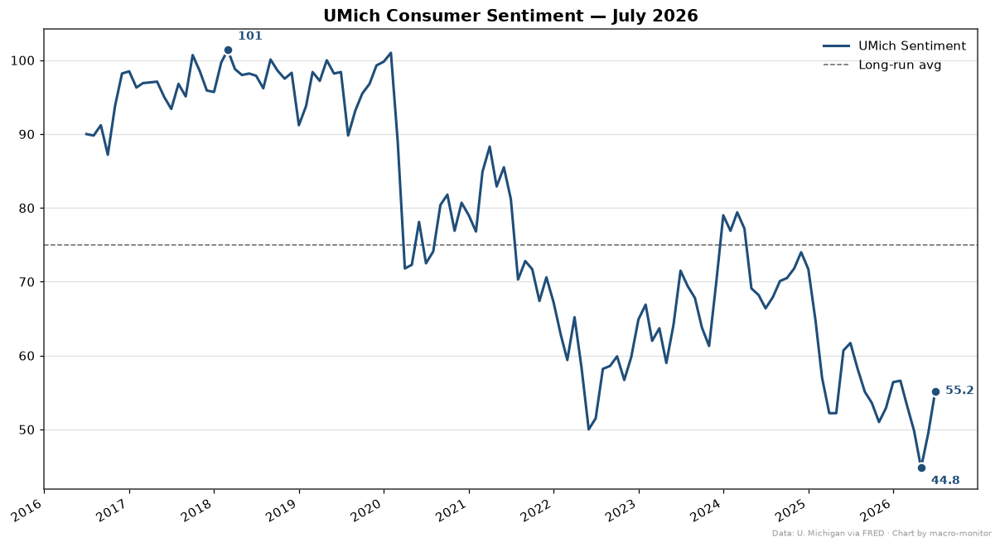
CPI
July 2026
Headline+0.89%m/m ann.+3.30% y/y · +0.07% m/m
Core+2.62%m/m ann.+2.47% y/y · +0.22% m/m
↳ Medical care services+2.65%y/y▼ decel
↳ Medical care commodities (drugs/equipment)-2.71%y/y▼ decel
↳ Hospital & related services+5.43%y/y▼ decel
↳ Professional services (physicians/dental)+3.44%y/y▼ decel
ℹ️ Consumer Price Index, All Items (CPIAUCSL): the average change in prices urban consumers pay for a full basket of goods and services -- the headline inflation number.
ℹ️ Core CPI (CPILFESL): CPI excluding food and energy -- the less- volatile underlying inflation trend, watched more closely than headline for policy signal.
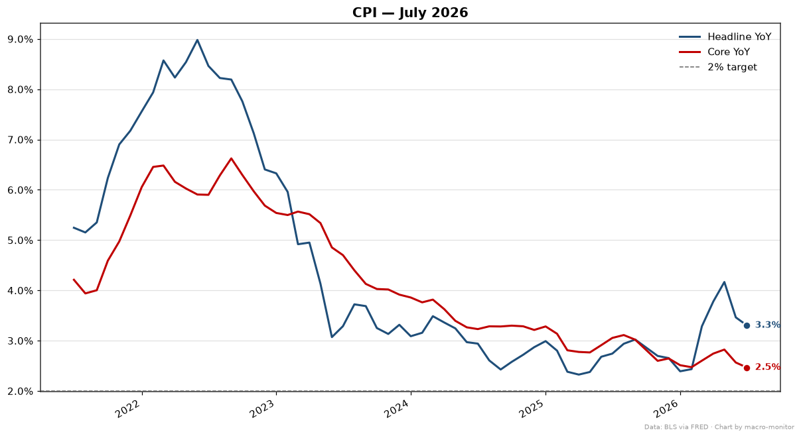
Employment Cost Index
Q2 2026
Total compensation (All Civilian)+3.38%y/y+3.60% q/q ann.
ℹ️ Employment Cost Index (ECIALLCIV): quarterly change in total compensation (wages plus benefits) for civilian workers -- the cleanest wage-inflation measure because it holds the job mix constant.
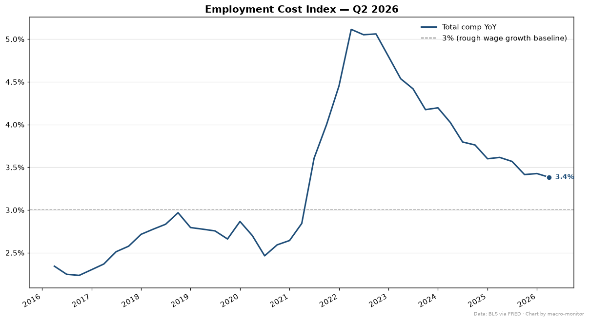
Employment Situation
July 2026
Nonfarm payrolls-23.0m/m chg+0.20% y/y
Unemployment rate (U-3)4.10%level-0.1pp m/m · -0.2pp y/y
Underemployment rate (U-6)7.90%level+0.0pp m/m · +0.0pp y/y
Health Care employment (NAICS 621+622+623) HC+2.16%y/y▼ decel
↳ Ambulatory health care services+2.41%y/y▼ decel
↳ Hospitals+1.80%y/y▼ decel
↳ Nursing & residential care+2.11%y/y▼ decel
White-collar employment (Prof & Business + Info + Financial) WC-0.23%y/y▲ accel
↳ Professional & business services+0.51%y/y▲ accel
↳ Information-2.83%y/y▲ accel
↳ Financial activities-1.24%y/y▼ decel
ℹ️ Nonfarm Payrolls (PAYEMS): total US jobs added or lost in the month across all employers except farms -- the headline jobs number from the BLS Employment Situation.
ℹ️ U-3 Unemployment Rate (UNRATE): the official/headline unemployment rate — people with no job who actively looked for work in the prior 4 weeks, as a % of the civilian labor force.
ℹ️ U-6 Underemployment Rate (U6RATE): the broadest BLS labor-underutilization measure — the U-3 unemployed PLUS marginally attached workers (want a job, looked in the past year but not the past 4 weeks, incl. discouraged workers) PLUS people working part-time for economic reasons (want full-time work but can't get the hours), as a % of the labor force plus the marginally attached.
ℹ️ Health Care Employment (HC_TOTAL, computed): sum of the Ambulatory Care + Hospitals + Nursing & Residential Care payroll series (NAICS 621+622+623) -- total healthcare jobs, a direct staffing/capacity read for provider names.
ℹ️ White-Collar Employment (WC_TOTAL, computed): sum of the Professional & Business Services (USPBS) + Information (USINFO) + Financial Activities (USFIRE) payroll supersectors — a proxy for office/knowledge-worker jobs, shown as YoY % change plus whether that growth rate is accelerating or decelerating vs the prior month and vs 3 months ago.

GDP
Q2 2026
Real GDP (inflation-adjusted)1.50%level
Nominal GDP (actual $)8.00%level
↳ PCE Health Services+7.23%y/y▲ accel
ℹ️ Real GDP Growth (A191RL1Q225SBEA): quarter-over-quarter growth of inflation-adjusted US output, annualized -- the headline economic growth number.
ℹ️ Nominal GDP Growth (A191RP1Q027SBEA): annualized quarterly growth of GDP in current dollars -- real growth plus inflation.

Initial Jobless Claims
Week ending Aug 22, 2026
Initial claims203,000level-11.35% y/y · +2.53% 4wk
ℹ️ Initial Jobless Claims (ICSA): people filing for unemployment insurance for the first time that week -- the fastest-turning labor-market indicator, published weekly.
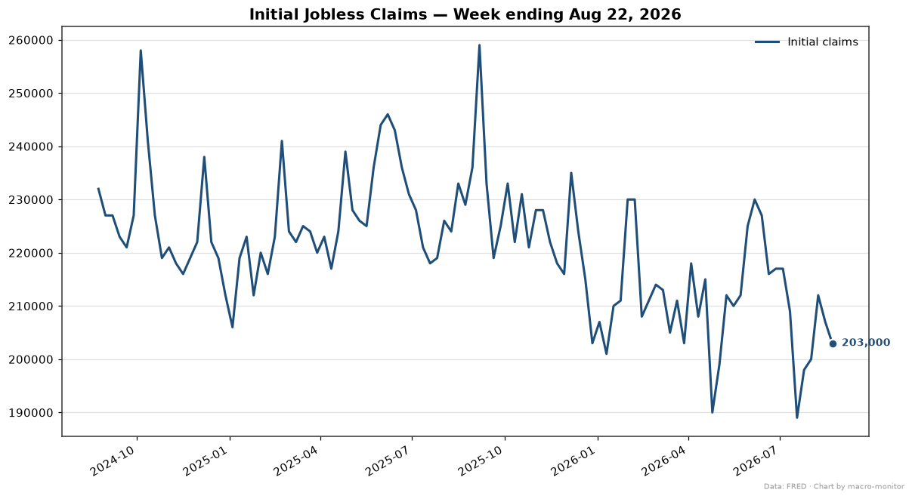
JOLTS
July 2026
Job openings7,271level+2.57% y/y · +89.0 m/m chg
Quits rate1.90%level-0.1pp m/m · -0.1pp y/y
ℹ️ Job Openings (JTSJOL): total unfilled job openings from the BLS JOLTS survey -- the labor-demand side; openings per unemployed worker is the tightness read.
ℹ️ Quits Rate (JTSQUR): the share of workers voluntarily quitting each month, from JOLTS -- workers quit more when confident they can find something better, so a falling quits rate = cooling labor market.
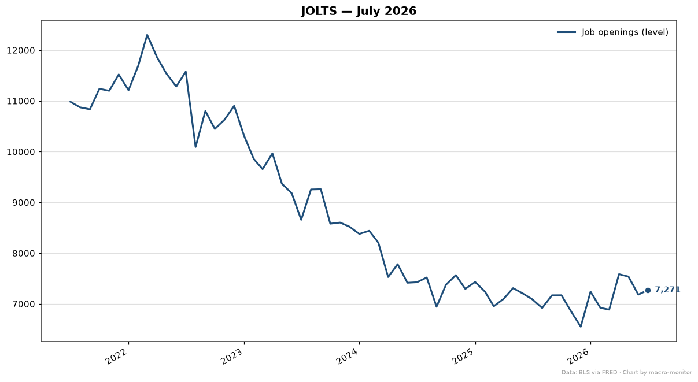
PPI
July 2026
Headline (Final Demand)-0.34%m/m ann.+4.66% y/y · -0.03% m/m
Core (Final Demand less Food & Energy)+2.95%m/m ann.+4.16% y/y · +0.24% m/m
↳ Hospitals PPI+3.27%y/y▼ decel
↳ Physician offices PPI+1.11%y/y▼ decel
↳ Pharma preparation mfg PPI+1.22%y/y▲ accel
↳ Surgical & medical instruments PPI+3.23%y/y▼ decel
↳ Dentist offices PPI+4.02%y/y▲ accel
ℹ️ Producer Price Index, Final Demand (PPIFIS): prices received by domestic producers -- upstream/pipeline inflation that often shows up in consumer prices later.
ℹ️ Core PPI (PPIFES): producer prices excluding food and energy -- the underlying pipeline-inflation trend.
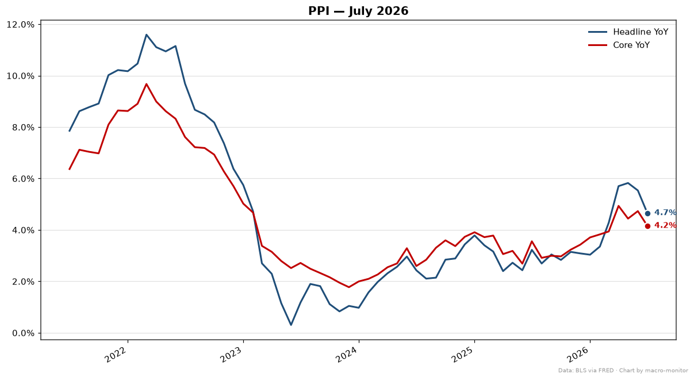
ADP National Employment Report
July 2026
Private payrolls change (ADP)+44,000m/m chg+0.58% y/y
↳ Education & Health Services (ADP)+36,000m/m chg
ℹ️ ADP Private Payrolls (ADPMNUSNERSA): private-sector jobs added per ADP's actual payroll records -- the mid-week preview of the official BLS number; the two often diverge month to month.
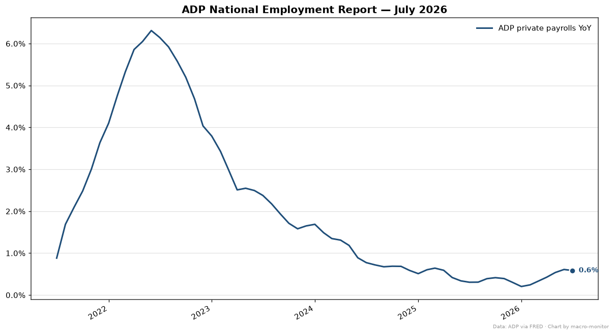
Construction Spending
July 2026
Total construction spending (annualized)-3.79%y/y-0.47% m/m
ℹ️ Total Construction Spending (TTLCONS): dollar value of all construction put in place -- residential, nonresidential (incl. the data-center/manufacturing buildout), and public works.
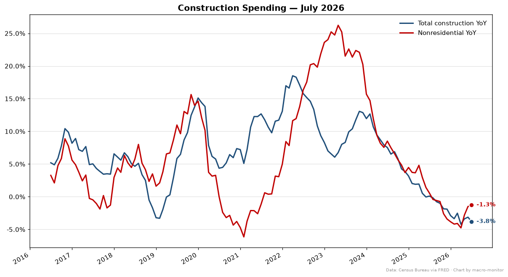
Durable Goods Orders
July 2026
New orders: durable goods+1.08%m/m+12.00% y/y
ℹ️ Durable Goods Orders (DGORDER): new orders for goods built to last 3+ years (aircraft, machinery, appliances) -- a business- investment and demand signal; volatile, driven by aircraft orders.
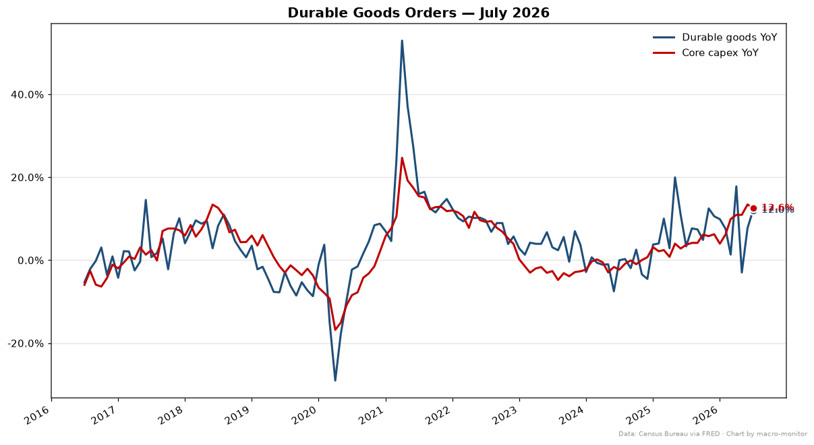
Gas Prices (US Regular, avg)
Week ending Aug 31, 2026
US Regular ($/gal)4.07level+28.14% y/y · -0.20% 4wk
ℹ️ Regular Gasoline Price (GASREGW): average US pump price per gallon, weekly -- the most visible household cost; moves consumer sentiment and headline CPI.
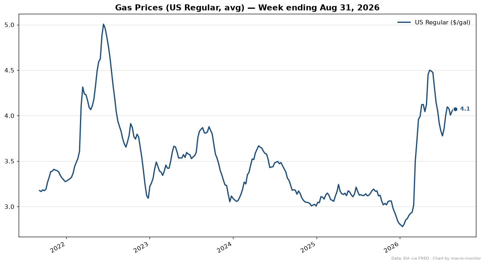
Housing Starts & Permits
July 2026
Housing starts (annualized rate)-13.48%y/y-12.44% m/m
Building permits (annualized rate)+2.36%y/y+4.29% m/m
ℹ️ Housing Starts (HOUST): new residential construction projects begun in the month, annualized -- new housing supply coming online.
ℹ️ Building Permits (PERMIT): permits issued for future residential construction -- the forward-looking companion to housing starts.
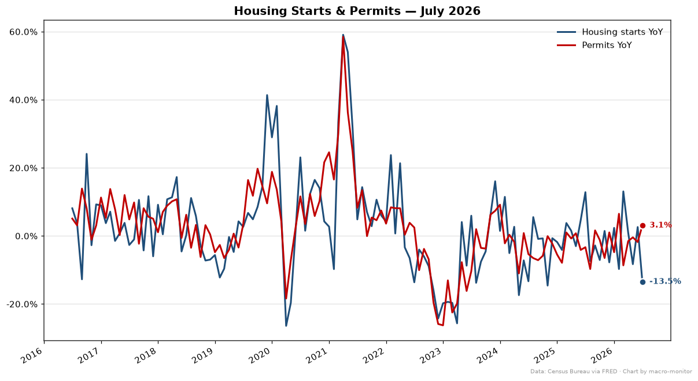
Industrial Production
July 2026
Industrial Production Index+1.08%y/y+0.20% m/m
Capacity Utilization76.29%level+0.1pp m/m · -0.1pp y/y
ℹ️ Industrial Production (INDPRO): physical output of US factories, mines, and utilities -- the goods-producing side of the economy.
ℹ️ Capacity Utilization (TCU): the share of total industrial capacity actually in use -- persistently high utilization signals capex needs and potential inflation pressure.
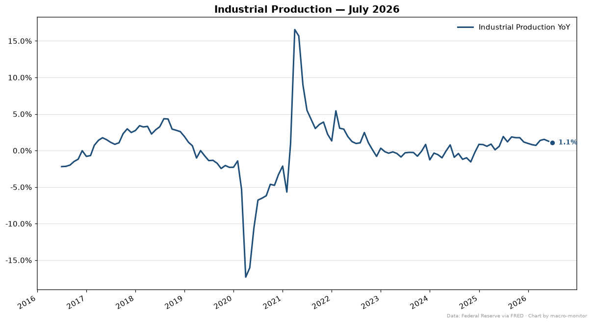
Productivity & Unit Labor Costs
Q2 2026
Output per hour (nonfarm business)+2.24%y/y+1.42% q/q ann.
Unit labor costs+1.43%y/y+1.31% q/q ann.
ℹ️ Nonfarm Labor Productivity (OPHNFB): output per hour worked -- how much each hour of labor produces; the long-run driver of real wages and corporate margins.
ℹ️ Unit Labor Costs (ULCNFB): labor cost per unit of output, i.e. compensation growth minus productivity growth -- rising unit labor costs squeeze margins or get passed on as inflation.
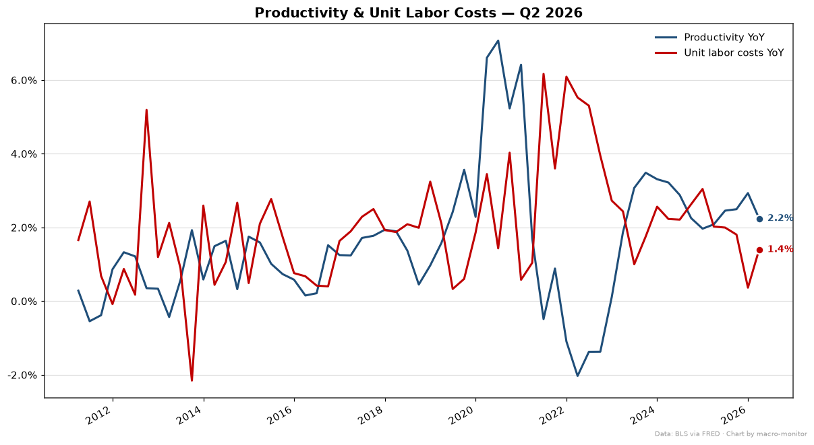
Trade Balance
June 2026
Trade balance (goods & services, $M)-73,261level+4,386 m/m chg · -14,564 y/y chg
ℹ️ Trade Balance, Goods & Services (BOPGSTB): US exports minus imports -- negative = trade deficit; swings in the gap feed directly into the GDP arithmetic.
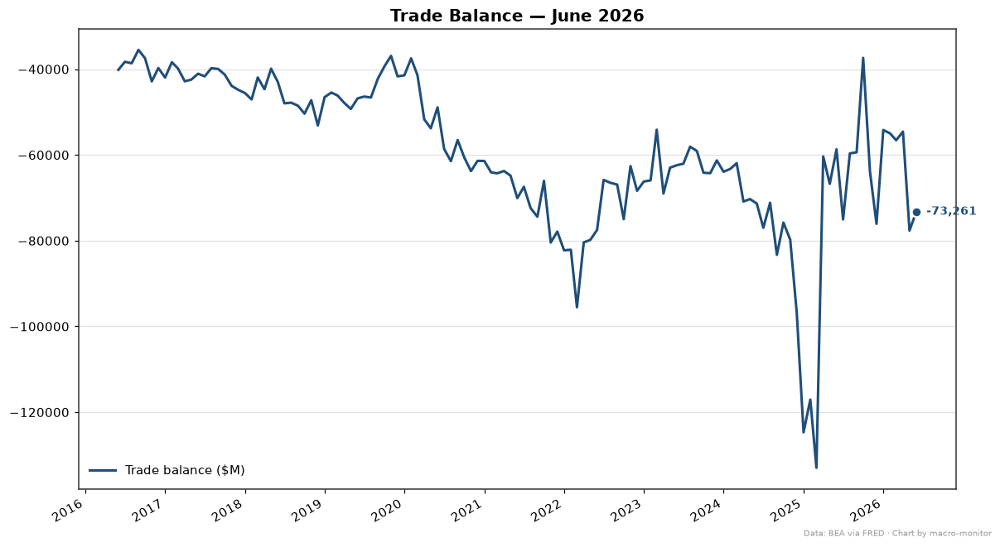